本篇笔记尝试从v2ray是什么、浅谈工作原理、运行服务端、运行客户端四个方面，通过少许命令和配置内容，让我们能迅速上手使用v2ray。
v2ray是什么？
Project V 是一个工具集合，它可以帮助你打造专属的基础通信网络。Project V 的核心工具称为V2Ray，其主要负责网络协议和功能的实现，与其它 Project V 通信。V2Ray 可以单独运行，也可以和其它工具配合，以提供简便的操作流程。
当然，v2ray是开源的，主要特性如下：
- 多入口多出口: 一个 V2Ray 进程可并发支持多个入站和出站协议，每个协议可独立工作。
- 可定制化路由: 入站流量可按配置由不同的出口发出。轻松实现按区域或按域名分流，以达到最优的网络性能。
- 多协议支持: V2Ray 可同时开启多个协议支持，包括 Socks、HTTP、Shadowsocks、VMess 等。每个协议可单独设置传输载体，比如 TCP、mKCP、WebSocket 等。
- 隐蔽性: V2Ray 的节点可以伪装成正常的网站（HTTPS），将其流量与正常的网页流量混淆，以避开第三方干扰。
- 反向代理: 通用的反向代理支持，可实现内网穿透功能。
- 多平台支持: 原生支持所有常见平台，如 Windows、Mac OS、Linux，并已有第三方支持移动平台。
浅谈工作原理
使用方式上，v2ray与其他代理shadowsocks工具类似，需要运行服务端和客户端两个实例(instance)。
常见的场景里，客户端运行在PC、手机等终端设备，服务端运行在云主机等服务器上。例如，我们若要在手机访问Google搜索引擎时，如果手机所在的网络禁用了Google的IP和域名，那么手机是无法直接访问的，需要由一个「手机可以访问的中间网络节点，且该节点能访问Google搜索引擎」的代理来起到一个桥梁的作用：手机的浏览器把HTTP请求发送到代理，代理把HTTP请求发送到Google搜索引擎，Google搜索引擎的HTTP响应会顺着这条路线最终返回给终端设备的浏览器。
在这里，v2ray和shadowsocks等网络工具就扮演了代理这个角色，但仅仅做网络流量代理是不够的，因为网络流量由网络协议承载，若协议的特征能被防火墙识别，被识别就意味着防火墙有理由把我们的代理IP添加到黑名单中，导致无法终端设备无法访问这个代理；所以网络工具还需要支持不易被识别的网络协议，这些协议往往不被浏览器等应用支持，需要由网络工具自己来支持，所以用作代理的网络工具需要运行客户端和服务端。
浏览器等终端应用通过HTTP、Socks5等常见的网络协议把流量发送给代理客户端，客户端再通过特定的协议将流量发送给代理服务端；
在v2ray的设计中，终端应用到代理客户端的接口被称为Inbound（入口），代理服务端到实际目的地（例如Google搜索引擎）的接口被称为Outbound（出口）。
运行服务端
摘自Project V官网，并假设你的服务端运行在Linux操作系统上。
1 下载 V2Ray
预编译的压缩包可以在如下几个站点找到：
- Github Release: github.com/v2ray/v2ray-core
- Github 分流: github.com/v2ray/dist
压缩包均为 zip 格式，找到对应平台的压缩包，下载解压即可使用。
2 验证安装包
V2Ray 提供两种验证方式：
- 安装包 zip 文件的 SHA1 / SHA256 摘要，在每个安装包对应的.dgst文件中可以找到。
- 可运行程序（v2ray 或 v2ray.exe）的 gpg 签名，文件位于安装包中的 v2ray.sig 或 v2ray.exe.sig。签名公钥可以在代码库中找到。
3 Linux 安装脚本
V2Ray 提供了一个在 Linux 中的自动化安装脚本。这个脚本会自动检测有没有安装过 V2Ray，如果没有，则进行完整的安装和配置；如果之前安装过 V2Ray，则只更新 V2Ray 二进制程序而不更新配置。
以下指令假设已在 su 环境下，如果不是，请先运行 sudo su。
运行下面的指令下载并安装 V2Ray。当 yum 或 apt-get 可用的情况下，此脚本会自动安装 unzip 和 daemon。这两个组件是安装 V2Ray 的必要组件。如果你使用的系统不支持 yum 或 apt-get，请自行安装 unzip 和 daemon
bash <(curl -L -s https://install.direct/go.sh)
此脚本会自动安装以下文件：
- /usr/bin/v2ray/v2ray：V2Ray 程序；
- /usr/bin/v2ray/v2ctl：V2Ray 工具；
- /etc/v2ray/config.json：配置文件；
- /usr/bin/v2ray/geoip.dat：IP 数据文件
- /usr/bin/v2ray/geosite.dat：域名数据文件
此脚本会配置自动运行脚本。自动运行脚本会在系统重启之后，自动运行 V2Ray。目前自动运行脚本只支持带有 Systemd 的系统，以及 Debian / Ubuntu 全系列。
- /etc/systemd/system/v2ray.service: Systemd
- /etc/init.d/v2ray: SysV
脚本运行完成后，你需要：
- 编辑 /etc/v2ray/config.json 文件来配置你需要的代理方式；
- 运行 service v2ray start 来启动 V2Ray 进程；
- 之后可以使用 service v2ray start|stop|status|reload|restart|force-reload 控制 V2Ray 的运行。
4 go.sh 参数
go.sh 支持如下参数，可在手动安装时根据实际情况调整：
- -p 或 --proxy: 使用代理服务器来下载 V2Ray 的文件，格式与 curl 接受的参数一致，比如 "socks5://127.0.0.1:1080" 或 "http://127.0.0.1:3128"。
- -f 或 --force: 强制安装。在默认情况下，如果当前系统中已有最新版本的 V2Ray，go.sh 会在检测之后就退出。如果需要强制重装一遍，则需要指定该参数。
- --version: 指定需要安装的版本，比如 "v1.13"。默认值为最新版本。
- --local: 使用一个本地文件进行安装。如果你已经下载了某个版本的 V2Ray，则可通过这个参数指定一个文件路径来进行安装。
示例：
- 使用地址为 127.0.0.1:1080 的 SOCKS 代理下载并安装最新版本：./go.sh -p socks5://127.0.0.1:1080
- 安装本地的 v1.13 版本：./go.sh --version v1.13 --local /path/to/v2ray.zip
5 配置服务端
一个参考，Inbound协议为vmess，outbound协议为freedom：
{
"log": {
"loglevel": "warning"
},
"inbounds": [
{
"port": （您配置的服务端监听的端口，整数，需要被服务器的防火墙开放TCP协议访问）,
"protocol": "vmess",
"settings": {
"clients": [
{
"id": "您生成的UUID，可以通过Linux命令uuidgen生成",
"level": 1,
"alterId": 1,
"security": "auto"
}
]
},
"streamSettings": {
"network": "h2",
"httpSettings": {
"path": "/hello"
},
"security": "tls",
"tlsSettings": {
"certificates": [
{
"certificateFile": "您的PEM certificate文件",
"keyFile": "您的PEM RSA private key文件"
}
]
}
}
}
],
"outbounds": [
{
"protocol": "freedom",
"settings": {}
}
],
"routing": {
"rules": [
{
"type": "field",
"ip": [
"geoip:private"
],
"outboundTag": "blocked"
}
]
}
}
您可以通过下面的脚本来生成一份自签证书：
#!/bin/sh
# create self-signed server certificate:
read -p "Enter your domain [www.example.com]: " DOMAIN
echo "Create server key..."
openssl genrsa -des3 -out $DOMAIN.key 4096
echo "Create server certificate signing request..."
SUBJECT="/C=US/ST=Mars/L=Mars/O=Mars/OU=Mars/CN=$DOMAIN"
openssl req -new -subj $SUBJECT -key $DOMAIN.key -out $DOMAIN.csr
echo "Remove password..."
mv $DOMAIN.key $DOMAIN.origin.key
openssl rsa -in $DOMAIN.origin.key -out $DOMAIN.key
echo "Sign SSL certificate..."
openssl x509 -req -days 365 -in $DOMAIN.csr -signkey $DOMAIN.key -out $DOMAIN.crt
echo "TODO:"
echo "Copy $DOMAIN.crt to /etc/nginx/ssl/$DOMAIN.crt"
echo "Copy $DOMAIN.key to /etc/nginx/ssl/$DOMAIN.key"
echo "Add configuration in nginx:"
echo "server {"
echo " ..."
echo " listen 443 ssl;"
echo " ssl_certificate /etc/nginx/ssl/$DOMAIN.crt;"
echo " ssl_certificate_key /etc/nginx/ssl/$DOMAIN.key;"
echo "}"
运行客户端
Windows
演示在
Windows操作系统运行v2ray-core客户端
在Github Release页面下载v2ray-windows-64.zip，解压到文件夹D:\bin\v2ray；用记事本等软件新建一个名为v2ray.bat的批处理文件，达到双击这个文件启动v2ray的作用，内容为：
start D:\bin\v2ray\wv2ray.exe -config D:\bin\v2ray\vpoint_socks_vmess.json
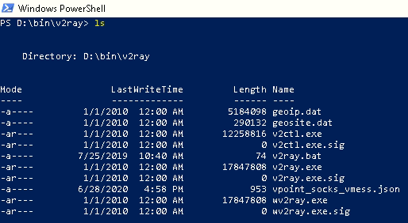
配置文件D:\bin\v2ray\vpoint_socks_vmess.json与您的服务端配置有关，对应上面的服务端的参考配置，客户端的参考配置：
{
"log": {
"loglevel": "warning"
},
"inbounds": [
{
"port": 1080,
"listen": "127.0.0.1",
"protocol": "socks",
"sniffing": {
"enabled": true,
"destOverride": [
"http",
"tls"
]
},
"settings": {
"auth": "noauth",
"udp": false
}
}
],
"outbounds": [
{
"protocol": "vmess",
"settings": {
"vnext": [
{
"address": "您的服务器的IP",
"port": （您配置的服务端监听的端口）,
"users": [
{
"id": "您生成的UUID，需要与服务端配置相同",
"level": 1,
"alterId": 1,
"security": "auto"
}
]
}
]
},
"streamSettings": {
"network": "h2",
"httpSettings": {
"path": "/hello"
},
"security": "tls",
"tlsSettings": {
"serverName": "您的PEM certificate文件的域名",
"allowInsecure": true
}
}
}
]
}
保存配置文件后，即可双击v2ray.bat运行，若客户端配置争取，则能在任务管理器看到w2ray.exe运行：
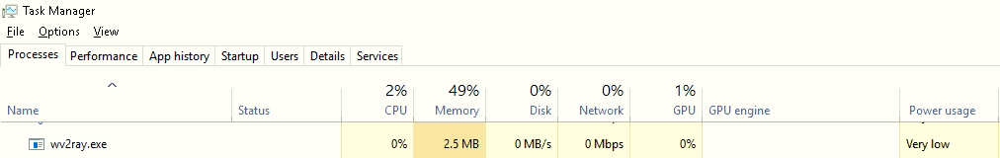
接下来在Chrome中安装Proxy SwitchyOmega插件，关闭所有打开的Chrome窗口，然后在powershell运行下面命令，运行一个Chrome实例，所有流量由socks5://localhost:1080代理，没错，这个代理就是我们刚刚在本地运行的v2ray实例：
C:\Users\（您的用户名）\AppData\Local\Google\Chrome\Application\chrome.exe --proxy-server="socks5://localhost:1080"
访问https://chrome.google.com/webstore/detail/proxy-switchyomega/padekgcemlokbadohgkifijomclgjgif，或者搜索Proxy SwitchyOmega：
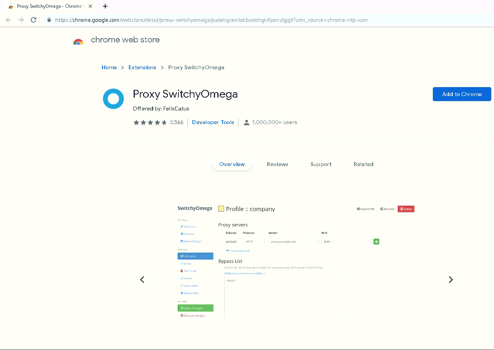
安装插件，设置代理服务器为本地的实例：
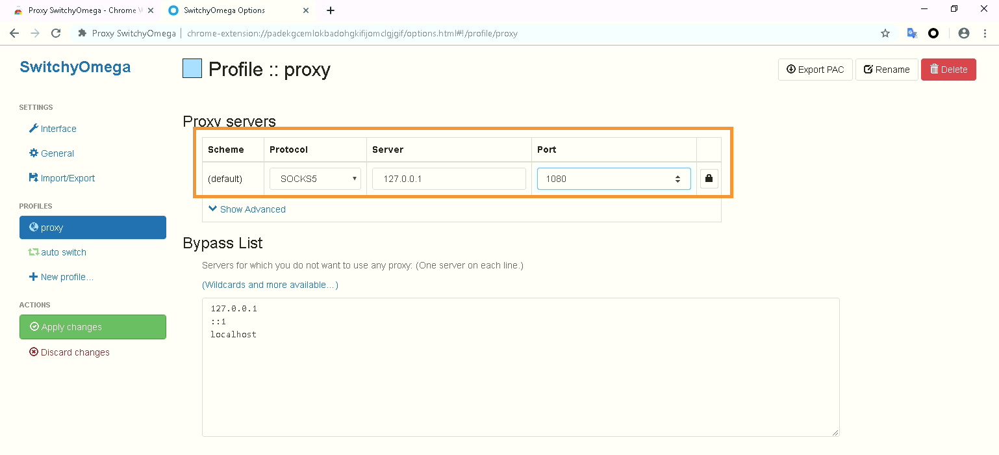
点击图标并设置为auto switch：
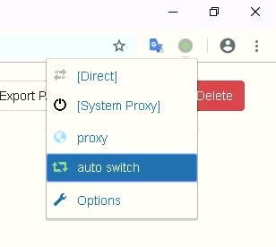
关闭当前所有Chrome窗口，不指定代理运行一个新窗口，访问https://www.google.com，等待图标显示橙色数字时，点击域名，点击proxy，将域名goole.com添加到代理规则中：
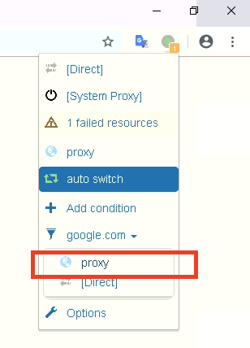
再刷新页面，不出意外的话，成功访问：
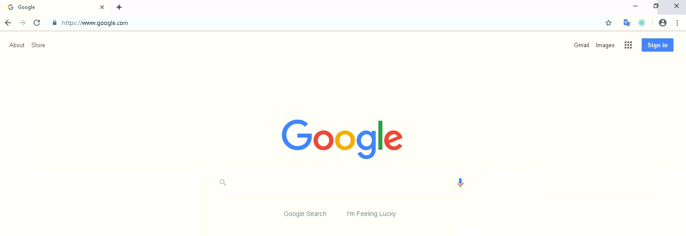
后续再补充安卓、iOS等其他客户端
Android
我们这里用到V2rayNG，一款开源的安卓软件，所有版本在https://github.com/2dust/v2rayNG/releases可以看到（请使用浏览器打开）；
安装成功之后，因为V2rayNG只作为客户端，不提供代理服务，所以需要输入服务器配置。
您可以自己搭建服务器，或者使用朋友的服务器（也有服务商提供付费服务），V2rayNG提供了【扫描二维码】的功能，便于分享服务器配置，如下：
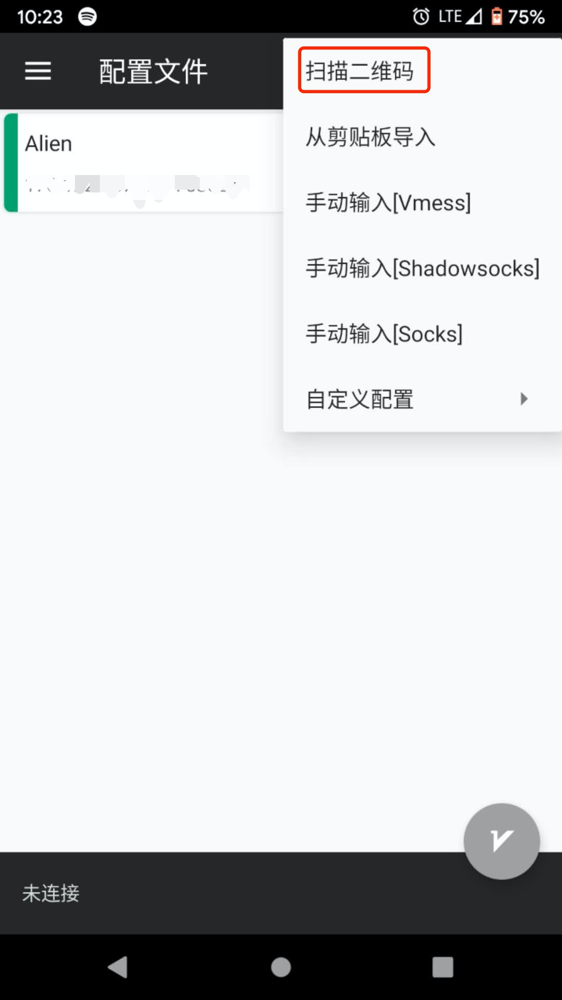
导入成功之后，【配置文件】列表中会添加一个配置，如下：
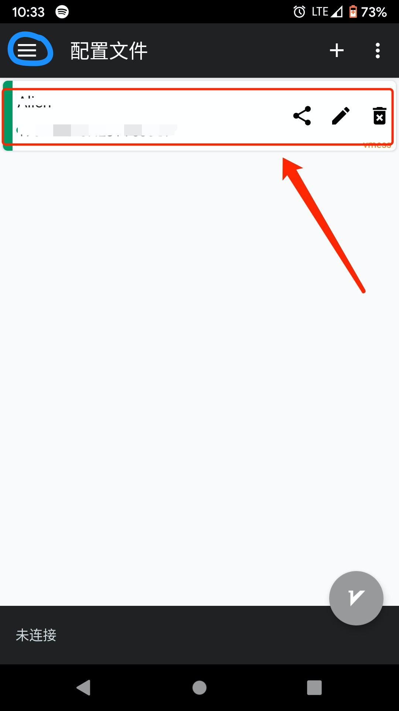
就快完成了，点击左上角的三道杠（上图蓝色圈出）呼出设置菜单栏，点击【设置】
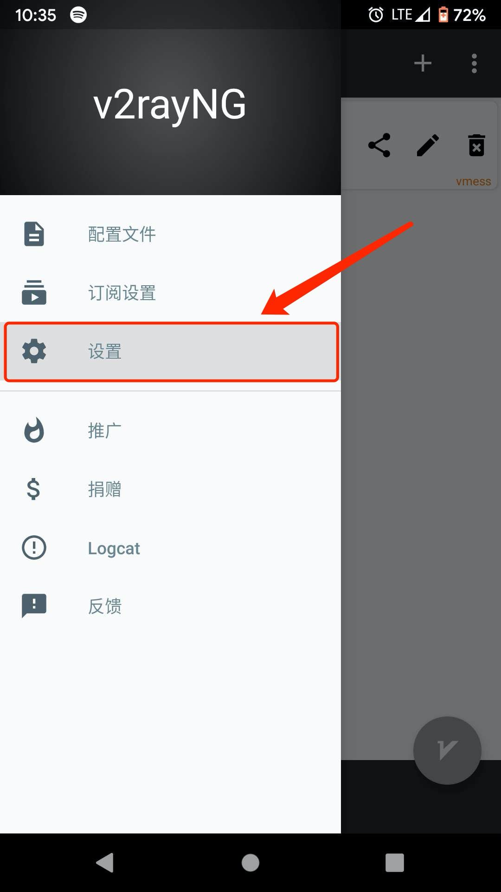
将【预定义规则】设置为「绕过局域网及大陆地址」，使得访问大陆网址和局域网地址不使用代理：
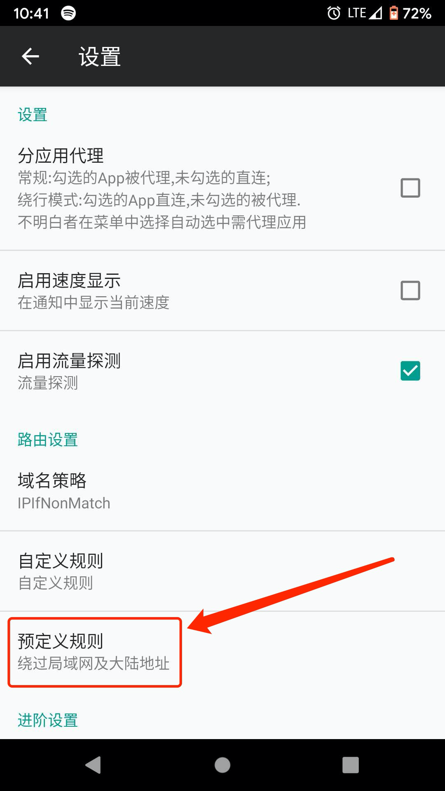
再次点击左上角，回到【配置文件】，选中我们刚刚导入的配置，然后点击右下角的V字按钮，启动服务（首次启动时，系统会弹出提示框，允许即可）：
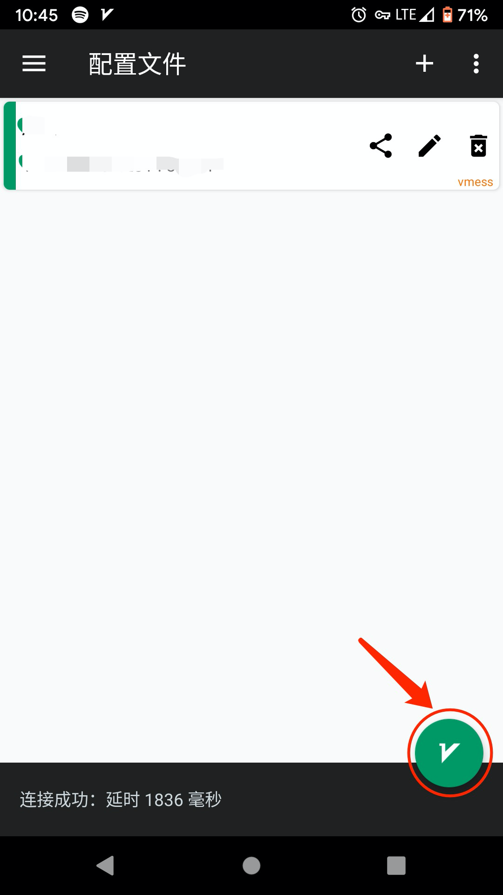
好了，试试在浏览器中访问https://www.google.com/吧，如果访问成功，说明已经可以科学上网了。